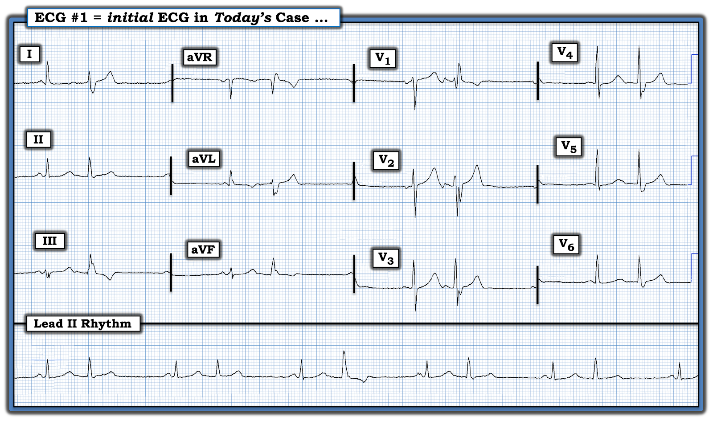
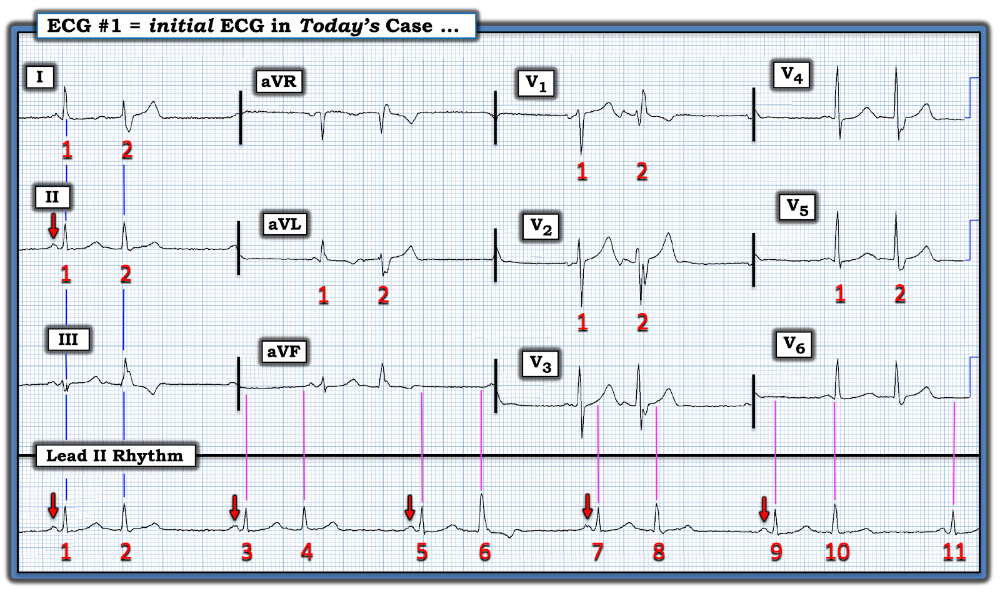
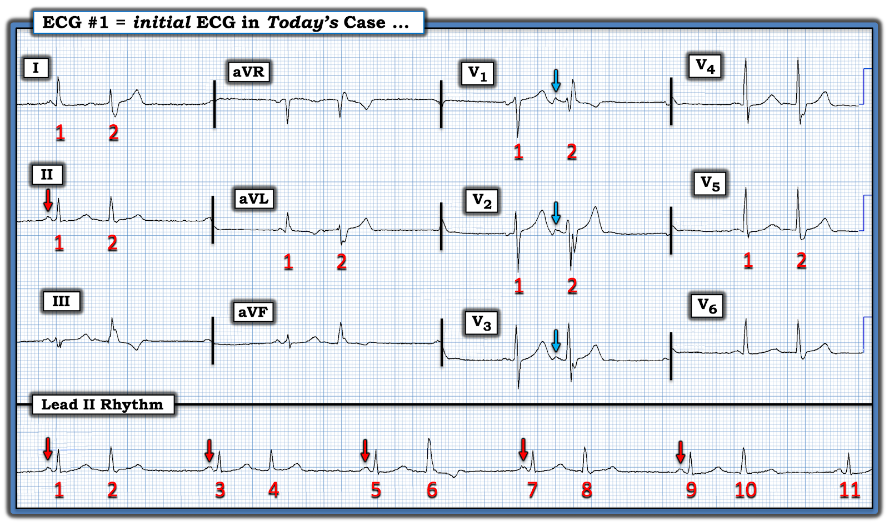
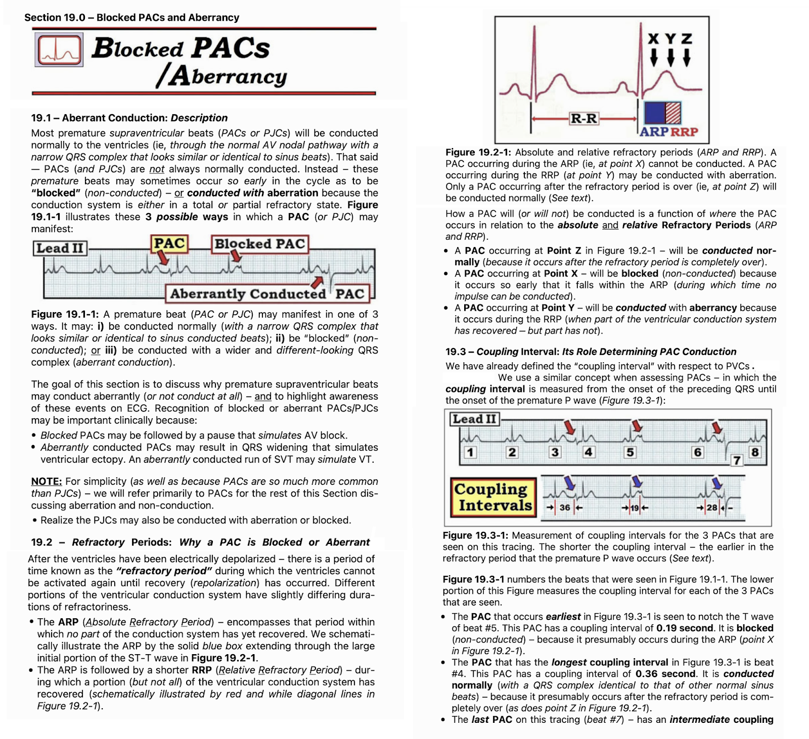

ECG Blog #391 — Không có triệu chứng nhưng nhịp không đều ...
Bệnh nhân này được khám tại phòng khám — và trong lúc thăm khám, phát hiện có “nhịp tim không đều”. Ông không có triệu chứng với điện tâm đồ trình bày ở Hình 1.
- BẠN sẽ đọc điện tâm đồ này như thế nào?
- Là bác sĩ chăm sóc ban đầu — BẠN sẽ làm gì?
- Điểm cộng (cũng là một GỢI Ý cho Câu trả lời! ): Có bao nhiêu nhát bóp được ghi trên điện tâm đồ ở Hình 1?


SUY NGHĨ CỦA TÔI về ca bệnh hôm nay:
Điện tâm đồ này được gửi đến để tôi đọc. Dù không biết chi tiết lâm sàng — tôi thấy đây là một ca minh họa rất tốt.
- Như thường lệ — tôi thích bắt đầu bằng việc tập trung vào dải nhịp chuyển đạo dài — dải này cho thấy một nhịp đôi (bigeminal) — ở chỗ có các nhóm lặp đi lặp lại gồm 2 nhát (Xem ECG Blog #232 để ôn lại khái niệm “nhịp đôi” (bigeminy) ).
CÂU HỎI:
- BẠN có nhận ra rằng dải nhịp chuyển đạo II dài ở cuối bản ghi không được ghi đồng thời với từng chuyển đạo trong suốt toàn bộ bản ghi 12 chuyển đạo không?
- NẾU chưa — Hãy NHÌN lại Hình 1.
TRẢ LỜI:
Tôi đã đánh dấu bản ghi hôm nay ở Hình 2. Trước khi đi tiếp — tôi muốn nhấn mạnh các điểm sau:
- Có 11 nhát bóp trên dải nhịp chuyển đạo dài (Bước đơn giản là đánh số các nhát bóp giúp bảo đảm không có nhầm lẫn về việc chúng ta đang nói tới (những) nhát nào.
- Mỗi nhóm 2 nhát đều bắt đầu bằng một sóng P xoang (tức là các mũi tên ĐỎ trước các nhát #1,3,5,7,9).
- Lưu ý rằng phức bộ QRS của các nhát #1 và #2 trên dải nhịp chuyển đạo II dài nằm ngay bên dưới QRS của các nhát #1 và 2 ở các chuyển đạo I,II,III. Điều này cho biết 2 nhát này được ghi đồng thời ở 4 chuyển đạo này (các đường dọc màu XANH kéo lên trên trong Hình 2 từ nhát #1 và #2 trên dải nhịp).
- Ngược lại — các phức bộ QRS ở 9 chuyển đạo còn lại không thẳng hàng với các nhát tương ứng bên dưới chúng trên dải nhịp chuyển đạo II dài (các đường dọc màu HỒNG kéo lên từ dải nhịp chuyển đạo dài). Đó là vì chỉ có nhát #1 và 2 được ghi đồng thời ở các chuyển đạo khác. Thực tế, chính 2 nhát đầu tiên này trong bản ghi hôm nay được lặp lại ở 9 chuyển đạo còn lại của điện tâm đồ #1.
LƯU Ý: Tôi đã đánh dấu điện tâm đồ #1 theo đó ở Hình 2.
- Ưu điểm của loại hệ thống theo dõi dùng trong bản ghi hôm nay — là chúng ta được thấy các nhát #1 và #2 của dải nhịp chuyển đạo II dài trông như thế nào ở cả 12 chuyển đạo.
- Nhược điểm của hệ thống theo dõi này — là chúng ta hoàn toàn không biết các nhát từ #3 đến 11 trông như thế nào ở bất kỳ chuyển đạo nào ngoài dải nhịp chuyển đạo II dài.
BÌNH LUẬN CỦA TÁC GIẢ: Thường rất hữu ích khi có thể xem hình dạng sóng P và QRS ở nhiều hơn một chuyển đạo. Ví dụ — Nếu một phần phức bộ QRS nằm trên đường nền ở 1 chuyển đạo mà bạn đang theo dõi — thì bạn có thể bị đánh lừa mà nghĩ rằng QRS hẹp — trong khi thực ra các chuyển đạo ghi đồng thời khác sẽ cho thấy rõ QRS rộng.
- Vì lý do này — nhìn chung tôi ưa chuộng hệ thống theo dõi thông dụng hơn, trong đó từng nhát bóp trên dải nhịp chuyển đạo dài đều được thể hiện ở 3 chuyển đạo ghi đồng thời phía trên chúng.
- Dù vậy — bản ghi hôm nay minh họa một ngoại lệ, trong đó hóa ra lại có lợi khi chúng ta thấy được hình dạng của 2 nhát đầu tiên ở mỗi chuyển đạo trong 12 chuyển đạo, như chúng ta sẽ thấy ngay sau đây.
================================
CA BỆNH TIẾP DIỄN:
Hãy NHÌN lại Hình 2.
- Đâu là nguyên nhân của nhịp đôi (bigeminal) hôm nay? (tức là Tại sao cứ cách một nhát lại có một nhát đến sớm hơn dự kiến?).
- GỢI Ý: Chuyển đạo hữu ích nhất để trả lời câu hỏi này là chuyển đạo V1.


ĐIỂM THEN CHỐT #1: Như đã bàn trong ECG Blog #232 — sẽ có ích khi xem xét chẩn đoán phân biệt của một nhịp đôi (bigeminal). Khi nhát thứ 1 trong mỗi cặp của nhịp đôi là nhát xoang dẫn truyền (như chúng ta thấy trên dải nhịp chuyển đạo II dài ở Hình 2) — Hãy xem xét các khả năng sau:
- Nhịp xoang kèm nhịp đôi nhĩ hoặc nhịp đôi bộ nối (tức là cứ cách một nhát là một PAC hoặc một PJC).
- Nhịp xoang kèm nhịp ba nhĩ — trong đó cứ mỗi sóng P thứ ba là một PAC bị "blốc" (không dẫn truyền).
- Blốc SA ( = xoang nhĩ).
- Blốc AV độ 2 Mobitz I ( = Wenckebach AV) với dẫn truyền AV 3:2.
- Blốc AV độ 2 Mobitz II.
==========================
Vượt ra ngoài phần cốt lõi: Về mặt kỹ thuật, còn một vài nguyên nhân khác của nhịp đôi không cần xem xét trong ca hôm nay, vì nhịp hoặc không hoàn toàn là nhịp trên thất — hoặc — vì nhát thứ 1 trong mỗi nhóm không phải là nhát xoang dẫn truyền. Các nguyên nhân khác này gồm:
- Nhịp đôi thất (tức là cứ cách một nhát là một PVC).
- Rung nhĩ, nhịp nhanh nhĩ hoặc cuồng nhĩ kèm dẫn truyền kiểu Wenckebach.
- Nhịp đôi "thoát–bắt được" (escape-capture) (nhát thứ 1 trong mỗi nhóm là một nhát thoát bộ nối hoặc nhát thoát thất — theo sau là một nhát được dẫn truyền).
==========================
ĐIỂM THEN CHỐT #2: Như đã bàn trong ECG Blog #389 — câu tục ngữ "Birds of a Feather Flock Together" (Chim cùng lông thì bay cùng đàn) — là một lời nhắc hữu ích về một khái niệm quan trọng trong việc đọc rối loạn nhịp.
- Ý nghĩa của câu tục ngữ tiếng Anh "Chim cùng lông ... " — là những người cùng kiểu, cùng sở thích hoặc tính cách thường có xu hướng tìm đến nhau (tương tự "ngưu tầm ngưu, mã tầm mã").
- Mối liên hệ của câu nói "Chim cùng lông" với rối loạn nhịp tim — là NẾU chúng ta thấy trên một rối loạn nhịp có bằng chứng rõ ràng khác về một hiện tượng xảy ra thường xuyên — thì những dấu hiệu bổ sung kém rõ ràng hơn ở cùng bệnh nhân đó nhiều khả năng cũng phản ánh cùng hiện tượng ấy.
- Áp dụng vào bản ghi hôm nay: Có 5 nhóm 2 nhát trên dải nhịp chuyển đạo II dài của bản ghi hôm nay. Như thấy ở Hình 2 — hình dạng QRS của nhát thứ 2 trong mỗi nhóm trong 5 nhóm này không giống nhau (tức là QRS của nhát #6 rõ ràng rộng hơn và trông khác so với QRS của các nhát #2,4,8 và 10). Dù vậy — vì mỗi nhóm trong 5 nhóm này đều bắt đầu bằng một sóng P xoang có hình dạng giống nhau — và vì thời điểm (khoảng ghép) của nhát thứ 2 trong mỗi nhóm trong 5 nhóm này hầu như giống hệt nhau — theo khái niệm "Birds of a Feather" (chim cùng lông), nguyên nhân của nhát #6 rộng hơn và trông khác kia nhiều khả năng sẽ cùng nguyên nhân với các nhát #2,4,8 và 10, dù các nhát này hóa ra là gì đi nữa.
ĐIỂM THEN CHỐT #3: Phù hợp với chẩn đoán phân biệt của nhịp đôi (bigeminal) đã điểm qua ở ĐIỂM THEN CHỐT #1 — có 2 dấu hiệu xác nhận nguyên nhân của nhát #2 trong bản ghi hôm nay. Đó là:
- Dấu hiệu #1: Ở các chuyển đạo V1,V2,V3 ghi đồng thời — thấy rõ một PAC (ngoại tâm thu nhĩ — Premature Atrial Contraction) trước nhát #2 ở cả 3 chuyển đạo này (các mũi tên XANH ở Hình 3). Đáng chú ý — PAC trước nhát #2 này thực sự chỉ thấy được ở các chuyển đạo V1,V2,V3, và không thấy ở 9 chuyển đạo còn lại. Như đã nhấn mạnh trong ECG Blog #211 — cách TỐT NHẤT để chứng minh dẫn truyền lệch hướng là cho thấy có một sóng P đến sớm (PAC) đi trước phức bộ giãn rộng.
- Dấu hiệu #2: Như được nhấn mạnh bên dưới trong PHẦN BỔ SUNG hôm nay — các nhát dẫn truyền lệch hướng thường biểu hiện một dạng blốc dẫn truyền nào đó, hay gặp nhất là hình dạng RBBB (blốc nhánh phải — Right Bundle Branch Block). Hình dạng rSR' của nhát #2 ở chuyển đạo V1 (với sóng S đi xuống dưới đường nền và "tai thỏ" bên phải cao hơn = sóng R') — kèm sóng S tận rộng ở các chuyển đạo I và V6 thuộc thành bên — là hình ảnh kinh điển của dẫn truyền lệch hướng kiểu RBBB.
ĐIỀU CỐT LÕI: Nguyên nhân của nhịp đôi trong bản ghi hôm nay là nhịp đôi nhĩ (tức là cứ cách một nhát là một PAC). Hình dạng QRS của các nhát mang số chẵn trên dải nhịp chuyển đạo II dài ở Hình 3 thay đổi — vì nhát thứ 2 trong mỗi nhóm được dẫn truyền với các mức độ dẫn truyền lệch hướng kiểu RBBB khác nhau.
- Các yếu tố khiến nhát thứ 2 trong mỗi nhóm dễ bị dẫn truyền lệch hướng là: i) PAC xuất hiện sớm, rơi vào RRP (thời kỳ trơ tương đối — Relative Refractory Period); và/hoặc, ii) Hiện tượng Ashman (trong đó khoảng R-R đi trước kéo dài hơn sẽ thuận lợi cho dẫn truyền lệch hướng do làm kéo dài RRP của nhát đi sau khoảng ngưng) — Xem PHẦN BỔ SUNG bên dưới!
ĐIỂM THEN CHỐT #4: Mười hai chuyển đạo tốt hơn một. Các sóng P đến sớm đi trước mỗi nhát mang số chẵn ở Hình 3 không thấy rõ trên dải nhịp chuyển đạo II dài. Do đó — chúng ta sẽ không thể tự tin chẩn đoán nhịp đôi nhĩ nếu không có các chuyển đạo V1,V2,V3 ghi đồng thời, vốn cho phép dễ dàng nhận ra sóng P đến sớm trước nhát #2.
- Mặc dù bệnh nhân hôm nay không có triệu chứng với nhịp thể hiện ở điện tâm đồ #1 — việc có PAC với tần suất nhiều như vậy là điều có thể đáng lo ngại, và có thể làm tăng nguy cơ tiến triển thành rung nhĩ.
- Xử trí tối ưu là cố gắng "tìm và sửa" nguyên nhân của các PAC thường xuyên này (tức là các chất kích thích bao gồm thuốc cường giao cảm, cocaine, rượu, cà phê quá mức — rối loạn điện giải — căng thẳng hoặc lo âu quá mức — mất nước — ngủ không đủ — thiếu máu hoặc bệnh lý khác). Nếu không tìm thấy nguyên nhân dễ "sửa" — có thể cần đánh giá thêm, bao gồm X-quang ngực và/hoặc siêu âm tim.


==================================
Lời cảm ơn: Tôi xin cảm ơn Ku-Lang Chang (ở Gainesville, Florida) đã gửi ca bệnh và bản ghi này.
==================================
Các bài ECG Blog liên quan đến ca hôm nay:
- ECG Blog #205 — Điểm lại Cách tiếp cận hệ thống của tôi trong đọc điện tâm đồ 12 chuyển đạo.
- ECG Blog #185 — Điểm lại cách tiếp cận Ps, Qs, 3R trong đọc nhịp.
- ECG Blog #232 — Điểm lại khái niệm nhịp đôi.
- ECG Blog #389 — Điểm lại khái niệm "Birds of a Feather".
- ECG Blog #253 — Một ca khác vận dụng nguyên tắc "Birds of a Feather".
- ECG Blog #140 — Ví dụ về dẫn truyền lệch hướng kiểu blốc hai phân nhánh luân phiên.
- ECG Blog #14 — Ví dụ về PAC bị blốc.
- ECG Blog #15 — Ví dụ về một WCT do dẫn truyền lệch hướng.
- ECG Blog #33 — Ví dụ về PAC với các mức độ dẫn truyền lệch hướng khác nhau.
- ECG Blog #70 — để ôn lại Hiện tượng Ashman.
- Xem ECG Blog #212 — để bàn luận từng bước một ca khác có hiện tượng Ashman.
- Xem ECG Blog #211 — Điểm lại TẠI SAO một số nhát đến sớm và một số nhịp SVT được dẫn truyền lệch hướng (và tại sao dạng dẫn truyền lệch hướng hay gặp nhất lại biểu hiện hình dạng RBBB).
- Xem ECG Blog #253 — Điểm lại một ca có nhiều nhát dẫn truyền lệch hướng.

============================
PHẦN BỔ SUNG (19/8/2023) Trong 3 Hình sau đây — tôi đăng phần tóm tắt từ cuốn ACLS-2013-ePub của tôi về những điều cơ bản của dẫn truyền lệch hướng.

ECG Media PEARL #28 (4:45 phút Video) — Điểm lại TẠI SAO một số nhát đến sớm và một số nhịp SVT được dẫn truyền lệch hướng (và tại sao dạng dẫn truyền lệch hướng hay gặp nhất lại biểu hiện hình dạng RBBB).
- BẤM VÀO ĐÂY — để tải bản PDF của tài liệu 6 trang này về những điều cơ bản của dẫn truyền lệch hướng, được trình bày ở Hình 4, 5, 6.




=======================================

ECG Media PEARL #29 (8:00 phút Audio) — Điểm lại hiện tượng Ashman là GÌ — và vận dụng nó trên lâm sàng NHƯ THẾ NÀO?
===================================

ECG Media PEARL #67 (9:10 phút Audio) — Vận dụng sự thông thái từ 2 câu nói tôi yêu thích vào "nghệ thuật" đọc điện tâm đồ. 2 câu nói đó là = "Birds of a Feather" (Chim cùng lông thì bay cùng đàn) và "Forest from Trees" (Thấy rừng chứ không chỉ thấy cây).